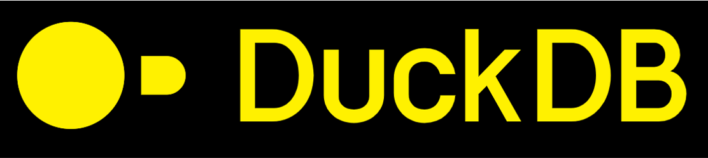
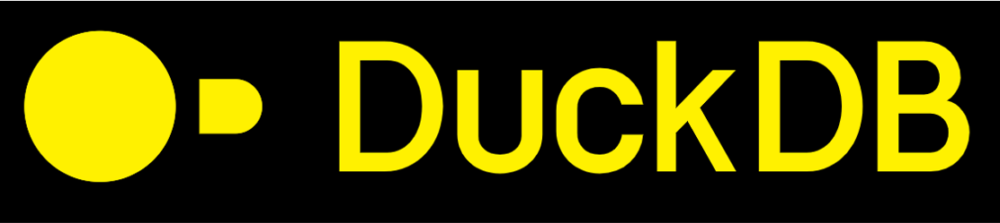
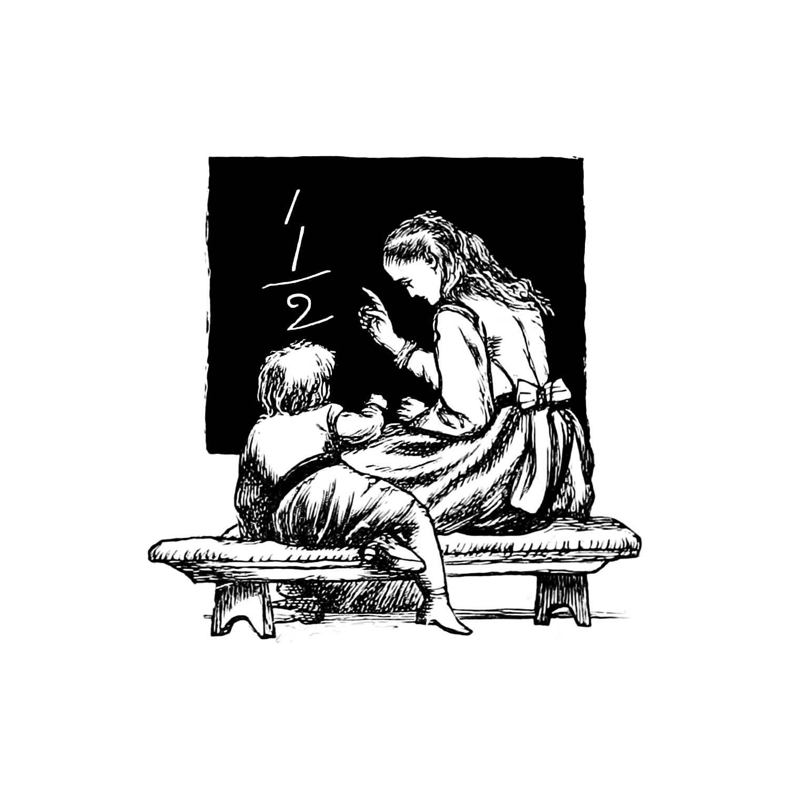

Programação Estatística I (Python)
Departamento de Estatística - UFPB
09/03/2023
Programação
Estatística I
Linguagem de Programação
Python
Apresentação
Sobre mim
Me chamo Prof. Dr. Pedro Rafael D. Marinho. Meu currículo Lattes poderá ser acessado clicando aqui.
Sou docente do Departamento de Estat√≠stica da UFPB. ü뮂Äçüè´
Toda minha formação acadêmica é na área de estatística (bacharelado ao doutorado).
Tenho entusiasmo por programa√ß√£o, ci√™ncia de dados e aprendizagem de máquina üíªüìà.
Me acompanhe no GitHub: https://github.com/prdm0.
Me acompanhe no Linkedin: https://www.linkedin.com/in/prdm0/.
O Departamento
Meu segundo lar
Departamento de Estatística da UFPB.
Por que Python?
Python
Alguns motivos de se considerar python:
- Python é Open Source;
- Python é uma linguagem de programação de propósito geral;
- Python é amplamente utilizada nas áreas de ciência de dados a aprendizagem de máquina;
- Python é uma linguagem muito fácil de se aprender, possuindo apenas 35 palavras reservadas. Porém, é claro que muitas outas coisas deverão ser aprendidas. Para se fazer ciência de dados, por exemplo, você precisará estudar algumas bibliotecas;
- Python te obrigra organizar minimamente o código, por meio de um sistema de indentação;
- Por ser uma linguagem muito utilizada, Python fará com que você converse sobre ciência de dados com muitas pessoas. Aprender Python será algo importante para o seu currículo e abrirá oportunidades de emprego.
Python
Python possui um número de palavras reservadas muito pequeno, o que facilita o aprendizado. Você poderá obter a lista das palavras reservadas fazendo:
import keyword
# Lista com palavras reservadas
palavras_reservadas = keyword.kwlist
# Palavras reservadas em Python
print(palavras_reservadas)['False', 'None', 'True', 'and', 'as', 'assert', 'async', 'await', 'break', 'class', 'continue', 'def', 'del', 'elif', 'else', 'except', 'finally', 'for', 'from', 'global', 'if', 'import', 'in', 'is', 'lambda', 'nonlocal', 'not', 'or', 'pass', 'raise', 'return', 'try', 'while', 'with', 'yield']35Origem
A linguagem Python foi desenvolvida em 1991 pelo matemático e progamador holandês Guido van Rossum.
Guido van Rossum estudou matemática na Universidade de Amsterdã.
Na comunidade ele é conhecido como “Benevolent Dictator for Life” - “Ditador Benevolente Vitalício” e sempre ditou a palavra final dos rumos da linguagem. Porém, em 2018 ele anunciou que estaria se afastando desta função.
Python atualmente é desenvolvida de forma comunitária pela fundação sem fins lucrativos denominada de Python Software Foundation.
Origem do nome
Guido começou a tarbalhar no projeto da linguagem em Dezembro 1989 ainda quando estudava na Universidade de Amsterdã. Já, o primeiro lançamento público da linguagem ocorreu em Fevereiro de 1991, quando a versão 0.9.0 foi lançada na Usenet.
O nome Python foi escolhido por Guido van Rossum, criador da linguagem, como uma homenagem ao grupo de comédia britânico Monty Python. Ele estava procurando um nome que fosse curto, simples e fácil de digitar, e que não estivesse sendo usado por outra linguagem de programação. Ele também queria que o nome fosse algo relacionado à comédia, pois ele achava que a programação deveria ser divertida e não apenas uma tarefa chata.
A disciplina
Mais detalhes
A entrevista #334 ao canal do Lex Fridman foi com o Guido van Russon, onde eles conversam sobre Python e o futuro da programação.
Para quem é destinado o curso?:
O curso é destinado para pessoas que nunca tiveram contato com programação, como também para pessoas que já programam em outras linguagens.
O andamento que será listado corresponde tão somente à uma visão geral da disciplina. Trata-se de apenas um resumo para que você possa entender qual será a dinâmica do curso. A inclusão de novos assuntos poderão ocorrer de acordo com o avanço da turma (com base no perfil médio que empiricamente irei observando).
Andamento do curso
O curso começará do básico, porém, seguirá para conceitos mais avançados da linguagem.
- Primeira parte: o enfoque será a linguagem Python, sem discussões sobre bibliotecas externas. Abordaremos temas como criação de ambiente virtuais, tipo de dados, estruturas de dados, operações matemáticas básicas, manipulação de strings, estruturas de controle de fluxo, laços, listas compreensivas, definição de funções, função lambda, funções varargs, closures e módulos.
- Segunda parte: exploraremos outros conceitos mais avançados da linguagem. Será abordado orientação à objeto (classes, heranças, heranças múltiplas e polimorfismo), alguns aspectos de programação funcional, funções geradoras e tratamento de erros. Também abordaremos as bibliotecas numpy, scipy e pandas, muito úteis para ciência de dados.
Andamento do curso
Como foi dito, o curso começará do básico, porém, seguirá para conceitos mais avançados da linguagem.
Bibliotecas Computacionais


 


Como estudar?
Devo apenas seguir os slides?
Tenho duas respostas que se complementam:
- Para estudar os exemplos e fazer os exercícios que irão aparecer com o andamento do curso. No decorrer da disciplina, exemplos e exercícios irão aparecer de forma intensa e será por meio desses slides que você deverá consultar os exercícios para praticar.
- Nos slides irão também aparecer como exercícios, a leitura de capítulos de livros, materiais e documentações. Esses também serão considerados nas avaliações, portanto, por favor, não os negligencies.
Em resumo, você deverá seguir os slides, mas deve atentar-se aos exercícios com indicação de leituras. Nessas leituras vocês irão encontrar explicações mais “conversadas” que te dará mais conhecimento teórico sobre os temas abordados.
Referências bibliográficas
No nosso curso, além desses slides, iremos utilizar as seguintes referências. Como dito anteriormente, atente-se aos exercícios que farão indicação de leitura.
- A documentação oficial da linguagem é um dos melhores materiais que você irá encontar para aprender Python https://docs.python.org/pt-br/3/ e está disponível em diversos idiomas. Poucas linguagens possue uma documentação robusta e didática quanto Python!
- O livro Pense em Python é um ótimo material que é disponibilizado graduitamente. Também é possível comprar o livro físico. Pense em Python é uma tradução do livro Think Python (2ª edição), de Allen B. Downey, traduzido e publicado no Brasil pela Editora Novatec sob licença da O’Reilly Media.
Referências bibliográficas
Outras Informações
Outras informações
Prezado discente, esteja sempre atento ao SIGAA. Isso é sua obrigação. Eventualmente poderei cadastrar notícias que são de vital importância para vocês. Por exemplo, poderei alterar as datas das avaliações. Se a informação estiver nos sistemas oficiais da instituição, você será o responsável por conhecê-la;
No SIGAA você terá acesso ao plano de curso;
No SIGAA encontra-se registradas as datas da respectivas avaliações: primeira, segunda e terceira avaliação, além da reposição e prova final.
Segundo a Resolução Nº 29/2020 do CONSEPE UFPB você terá direito em repor, independentemente do motivo, uma das três avaliações. Mas será apenas uma!
Bem vindo a jornada de Python
Git e GitHub
- Em dias atuais, em que vivemos programando e constantemente produzindo códigos de programação para analisar dados e/ou automatizar tarefas do nosso dia a dia, ter uma forma de versionar código é fundamental. O - git e - GitHub serão um dos seus maiores parceiros na programação.


Git e GitHub
Não negligencie o aprendizado dessas ferramentas. Por exemplo, é por meio do GitHub que muitos programadores interagem, funcionando inclusive como uma rede social de programadores.
Por onde aprender utilizar o Git e GitHub?
Bem, há diversos materiais na internet, mas coloco aqui três vídeo aulas que criei para discente de uma outra disciplina que lecionei no departamento. Com esses três vídeos você conseguirá dar seus passos e colocar o Git e GitHub em sua rotina diária de programação.
Por exemplo, essa apresentação econtar-se no meu GitHub https://github.com/prdm0. Inclusive foi no GitHub que hospedei o HTML e demais arquivos dessa apresentação para que vocês pudessem acessar o conteúdo por um simples link. Legal, não?
Aulas de Git e GitHub
Exercício: você deverá assistir as três vídeo aulas abaixo. Com elas você poderá dar os primeiros passos no uso do Git e GitHub:
Use Linux
Você não é obrigado, para cursar essa disciplina, utilizar utilizar alguma distribuição GNU/Linux. Todavia existem diversas vantagens em utilizar. Enumero algumas logo abaixo:
Utilizar um novo sistema operacional será importante para o seu portfolio. Em alguma empresa que eventualmente você venha trabalhar, pode ser que o uso do Linux seja o padrão.
O Linux √© Open Source. Isso quer dizer que al√©m de ser de gra√ßa, o seu c√≥digo fonte √© aberto. D√™ prefer√™ncia ao uso de ferramentas open source. D√™ prefer√™ncia √† liberdade e quebre as algemas! üéâ
É fácil manter todo o sistema e seus programas atualizados. Ao invês de atualizar cada programa você poderá atualizar tudo de uma única vez.
Ao contrário do que muitas pessoas dizem, usar Linux é muito fácil. Atualmente há diversos ambientes gráficos com várias opções para você clicar e configurar o seu sistema. Alguma dessas interfaces poderá cair no seu gosto.
Quando você virar um programador, em algum momento você irá utilizar sistemas que são hospedados na nuvem. Muito provavelmente você irá hospedar uma aplicação ou irá simplesmente utilizar o poder computacional de uma máquina em algum servidor. Muito provavelmente o que você encontrará é um sistema operacional com kernel Linux .
Quer conhecer mais
sobre Linux?
Use Linux
Exercício: Leia o Capítulo 2 do meu material da disciplina de Estatística Computacional.
Assim termino a minha tentativa de evangelização sobre o Linux.

IDE para programar
Existem diversas opções para de Integrated Development Environment - IDE para se programar em Python. Enumero algumas que acho que você poderá explorar e depois escolher. É questão de gosto e você precisa experimentar para poder escolher.
- Visual Studio Code - VSCode: IDE Open Source desenvolvida pela Microsoft e que está disponível para múltiplas plataformas.
- PyCharm: IDE paga, mas que possui uma versão gratuita. Acho muito pesada. Particularmente não gosto muito.
- Spyder: IDE Open Source que é legal, mas prefiro o VSCode.
- RStudio: Sim, é possível programar em Python no RStudio. Interessante se você deseja integrar códigos R com códigos em Python, por meio da biblioteca reticulate.
- JupyterLab: é o mais recente ambiente de desenvolvimento interativo baseado na Web para notebooks, código e dados. É legal se você deseja mesclar textos e código. Útil para documentar um fluxo de análise de dados, por exemplo.
RStudio = Python e R juntos = + = ❤️
JupyterLab
Para instalar o Jupyter notebook ou o JupyterLab, uma versão mais recente do Jupyter, você antes precisa ter instalado no seu sistema operacional o Python Package Index - PyPi.
O PyPi é um repositório oficial de bibliotecas para Python. É análogo ao Comprehensive R Archive Network - CRAN do R. Ao contrário do R, onde você instala as bibliotecas dentro da seção R, o PyPi você executa no terminal de linha de comando do seu sistema operacional, isto é, fora da seção Python.
JupyterLab
Para executar uma instância do JupyterLab, execute o comando abaixo no terminal do seu sistema GNU/Linux:
A parâmetro &! executa o programa, no caso o JupyterLab, em segundo plano, ou seja, a seção do terminal do Linux ficará desocupada para rodar outros comandos Shell Script. Mas, você poderia rodar o comando assim sem especificar o &!.
JupyterLab
A extensão dos notebooks é .ipynb, em que, ipy faz alusão ao interpretador de python padrão que é utilizado no Jupyter que é o IPython e o nb refere-se à notebook. Notebooks são arquivos em que você irá misturar texto com código. O legal é que se você conhece os comandos de marcação do Markdown, você poderá utilizá-los para a construção de um texto consistente.
Além disso, é possível utilizar a sintaxe do \(\LaTeX\) para inclusão de fórmulas e notações matemáticas.
Não sabe \(\LaTeX\)? Aqui está um ótimo material para você se debruçar. É fácil. Aprenda!
JupyterLab e Markdown
Alguns comandos úteis do Markdown você poderá encontrar clicando aqui.
Dependendo do tutorial de Markdown que você possa estar utilizando, pode ser que algum código funcione de forma um pouco diferente. Por exemplo, a sintaxe de Markdown para usar na biblioteca Quarto poderá não irá funcionar, em seus aspectos mais rebuscados, no JupyterLab.
Em falando em Quarto <https://quarto.org>, aproveito para deixar a dica para que vocês venham estudar e dominar. Ele permitirá que você possa construir relatórios automáticos dinâmicos em Python, R, Julia e Observable. Por exemplo, essa apresentação foi construída em Quarto. Há no site do Quarto um tutorial básico de Markdown <https://quarto.org/docs/authoring/markdown-basics.html>. Lembre-se: Alguns comandos de Makdown que funciona no Quarto pode não funcionar no JupyterLab.
Atenção: JupyterLab e Quarto são duas coisas bem distintas. A única semelhança é que ambos permitem que você utilizem códigos Markdown para a produção de textos formatados. Por favor, não confunda!
JupyterLab e Markdown
Exercício: Salve o código no arquivo exemplo_juptylab.ipynb e importe-o no JupyterLab. Você já sabe como chamar o JupyterLab! Procure entender e memorizar os comandos que foram utilizados para a formação do texto, ou seja, os comandos de Markdown utilizados.
Caso você abra o código em um editor de texto, você verá um código que a primeira vista pode ser estranho para você. Relaxe, esse é o código que por trás, sem você ver, é salvo no arquivo .ipynb. O que você verá ao utilizar o JupyterLab são as informações importadas lá no ambiente. É uma visualização muito mais palatável.
Na verdade, o código que é salvo na extensão .ipynb é um código que também é fácil de se entender. Trata-se de um código JavaScript Object Notation - JSON. Esse formato é muito comum em APIs, sendo esta uma forma de comunicação entre sistemas.
Muitos dados não são disponíveis em arquivos CSV, XLS, XLSX e estão disponíveis em uma API, onde a informação são lidas de arquivos no formado JSON. Na verdade essa é a forma mais consistente e elegante de ler dados. Se os dados que precisa ler está disponível em uma API, você está em uma situação confortável.
JupyterLab e Markdown
Imagem do JupyterLab ao importar o arquivo exemplo_juptylab.ipynb. Esse bem formatado que mistura códigos Python é a forma que você verá o conteúdo JSON do arquivo .ipynb
Visual Studio Code - VSCode
No VSCode também é possível trabalhar com arquivos com extensão .ipynb. Do mesmo modo que no JupyterLab, no VSCode baste criar um arquivo com a extensão .ipynb e começar a trabalhar com código Markdown e seu código Python.
exemplo_juptylab.ipynb do exercício anterior. Experimente você também editar arquivos .ipynb no VSCode.Opinião pessoal
Voc√™ não perguntou, mas como a aula √© minha, vou responder. üòÖ
O que eu prefiro para programar em Python? Ouvi essa pergunta?! Bem, entre todos os ambientes de desenvolvimento que mencionei, prefiro o VSCode.
Meus motivos são:
- É Open Source e há uma comunidade muito ativa que mantêm plugins interessantes para ele;
- Como dito no item acima, há diversos plugins/extensões que são disponíveis para ele e que ajuda o progamador em sua produtividade;
- Acho ele bem construido e me lembra editores antigos como Atom que gostava muito;
- Empresas como a Posit Ltda desenvolve produtos, a exemplo do Posit Workbench em que é possível vincular o VSCode e trabalhar com R e Python no VSCode;
- Muitas vezes prefiro trabalhar diretamente com arquivios
.py, ou seja, com o script python para que eu possa executar no interpretador iterativo ou chamar funções por linha de comando no shell bash.
É uma questão de gosto, e está tudo bem se você preferir um outro editor de código e/ou IDE de programação. Apenas saiba que na hora de construir algo maior, como um pacote ou um programa sofisticado, você precisará de arquivos .py e não arquivos .ipynb.
E repito. Arquivos .ipynb são legais, por exemplo, para documentar um fluxo de trabalho de analise de dados. Como também consigo trabalhar com notebooks em VSCode, me sinto bem servido.
Python é uma linguagem interpretada
CPython o interpretador de Python mais comumente usado e é o interpretador padrão para a linguagem Python. Ele pode ser usado para executar código Python em muitos sistemas operacionais diferentes, incluindo Windows, macOS e Linux. Além disso, ele é open source, o que significa que o código fonte está disponível para qualquer pessoa ver ou modificar.
O nome é CPython pelo fato do interpretador ter sido escrito utilizando a linguagem C.
Interpretador
Perceba que no processo de interpretação de Python, um bytecode (código de máquina) é gerado e que posteriormente é interpretado pela Python Virtual Machine - PVM. É algo semelhante que ocorre em Java, porém lá o processo é considerado uma compilação, pois todo o código é compilado de uma única vez, além de haver diversas otimizações internas no processo de conversão.
Em Python, a compilação ocorre linha por linha e logo após a interpretação do pedaço do código compilado ocorre. Em outras palavras, todo esse processo ocorre de forma dinâmica durante a execução do programa.
Seu processador não entende código Python ou de qualquer outra linguagem. Seu processador só entende código de máquina!
Implementações Alternativas
Existem diversas implementações alternativas de Python
CPython: Implementação original da linguagem escrita em C. É nessa implementação que novas funcionalidade irão aparecer primeiro;
PyPy: este é um interpretador de Python alternativo que usa uma implementação diferente da linguagem e pode ser mais rápido que o CPython em alguns casos;
IronPython: este é um interpretador de Python para .NET, que permite que você use Python em aplicativos .NET e no ambiente de desenvolvimento Visual Studio;
Jython: este é um interpretador de Python escrito em Java, que permite que você use Python em aplicativos Java e integre Python e Java em seus projetos;
MicroPython: este é um interpretador de Python para dispositivos embarcados, o que significa que ele pode ser usado em microcontroladores e outros dispositivos de baixo poder de processamento.
Aten√ß√£o: iremos sempre utilizar o CPython, que √© a implementa√ß√£o padrão da linguagem. Encare as demais implementa√ß√µes como informa√ß√£o adicional para o seu disco que armazena conhecimentos ü߆.
Código compilado de Python
Antes de tudo, deixa eu te dizer que você pode executar o código Python usando o interpretador de Python que vem disponível em algumas IDE’s que foram apresentadas, ou seja, na IDE de sua escolha, você irá criar o arquivo Python e com algum atalho irá executar o código escrito no arquivo .py no console/interpretador utilizado pela IDE.
A outra forma é executando o script em algum terminal, fora de alguma IDE. Por exemplo, suponha que em algum diretório você teinha um código Python que deseja executar fora de uma IDE. Por exemplo, suponha que tenho o arquivo soma.py no diretório /home/prdm0/Downloads. Não precisa agora entender o código. Apenas saiba que a função soma irá somar uma lista de valores passados.
import py_compile
import sys
def soma(*args):
lista = map(lambda x: float(args[x]), range(len(args)))
print(f"A soma é {sum(lista)}")
soma(*sys.argv[1:])
py_compile.compile(
file="/home/prdm0/Downloads/soma.py",
cfile="/home/prdm0/Downloads/soma.pyc"
)Ao executar o arquivo, o diretório /home/prdm0/Downloads/ será criado o arquivo soma.pyc um código binário.
Código compilado de Python
Agora no terminal do seu sistema, basta executarmos o arquivo soma.pyc:
# Rode no terminal shell, onde é possível invocar o Python:
python /home/prdm0/soma.pyc 1.7 2.3 3.0Você terá como retorno, o valor 7.
Note que no código, os valores 1.7, 2.3 e 3.0 foram passados para a função pela lista sys.argv e esses valores são passados como string, isto é, são do tipo str. Por isso que o código teve a preocupação em converter as informações para o tipo float (veja a linha 5 do código).
Se o código te parece estranho, não se preocupe. Com o avanço do curso os conceitos irão clereando. Apenas entenda que é possível passar argumentos para funções em script .py via terminal usando a lista argv do módulo sys.
Utilizando shebang #!
O shebang, denotado por #!, é uma instrução no início de um arquivo de script que informa ao sistema operacional qual interpretador deve ser usado para executar o script.
Você pode usar o shebang para executar scripts Python na linha de comando, desde que o interpretador Python esteja instalado no seu sistema, claro!
Exemplo: Construa o arquivo shebang_cumprimento.py, de tal modo que o conteúdo do arquivo seja:
#!/usr/bin/env python
# Definindo uma função qualquer em Python.
def cumprimento(cump = "Olá pessoa"):
print(f"{cump}, bem vindo ao curso de Python!")
# Executando a função cumprimento() definida logo acima:
cumprimento()Podemos agora em um terminal shell (terminal do seu sistema) navegar até o diretório do arquivo shebang_cumprimento.py e executá-lo fazendo ./shebang_cumprimento.py. Essa notação ./arquivo é a que utilizamos em terminais do linux para exectuar arquivos binários.
Utilizando shebang #!
Antes de exectuar o arquivo, é preciso dá permissão de execução. Para tanto, devemos navegar até o diretório do arquivo e executar o comando sudo chmod +x shebang_cumprimento.py. Supondo que o arquivo shebang_cumprimento.py, esteja no diretório ~/Downloads, então deverei fazer:
# Usando o comando cd para navegar entre os diretórios.
# A notação ~ significa diretório do usuário. No meu caso
# é o diretório /home/prdm0
# Poderia ter feito cd /home/prdm0/Ðownloads. É em Downloads
# que encontra-se o arquivo shebang_cumprimento.py, no meu caso:
cd ~/Dowloads
# Dando permissão para executar o arquivo:
sudo chmod +x shebang_cumprimento.py
# Executando o arquivo:
./shebang_cumprimento.pyAtenção: é possível executar scripts de qualquer linguagem seguindo esses passos. Por exemplo, se você tem o R instalado no seu sistema, usaríamos #!/usr/bin/env R como primeira linha do script .R.
Se você não sabe onde encontra-se o binário da linguagem que desejá utilizar, no terminal linux você poderá fazer where python ou which python. No meu caso, o retorno foi /usr/bin/python.
Acresventamos o env para especificar ao sistema operacional que ele deverá executar a primeira ocorrência de python em um dado sistema operacional, uma vez que o script poderia não ser executado caso em algum outro sistema, a linguagem python não estivesse em /usr/bin.
Colocar o env diz ao sistema operacional que procure python na variável PATH do sistema.
Utilizando shebang #!
O vídeo logo abaixo mostra o procedimento para se criar um arquivo executável de um script python para ser executado via terminal.
Criando ambientes virtuais em
Os ambientes virtuais em Python são ambientes isolados que permitem que você instale pacotes e módulos em um espaço de trabalho separado do sistema. Isso permite que você tenha diferentes versões de pacotes e módulos instalados em diferentes projetos sem afetar uns aos outros. Além disso, os ambientes virtuais permitem que você teste seu código em diferentes versões do Python sem afetar a instalação global do Python no seu sistema.
# Navegando ao diretório onde criarei o ambiente:
cd ~/Downloads
# Criando o ambiente:
python -m venv meu_ambiente
# Ativando o ambiente ("meu_ambiente") criado:
source ~/Downloads/meu_ambiente/bin/activateNota: Não utilize o Download como diretório de trabalho. Coloquei no código apenas como exemplo. Eventualmente você irá deletar os arquivos em Downloads e acabaria perdendo seus projetos associados ao ambiente criado.
Criando ambientes virtuais em
Nota: Utilize o comando deactivate para sair do shell do ambiente virtual e voltar ao padrão.
Criando ambientes virtuais em
Exercício: Crie um abiente virtual no diretório raiz do seu usuário. Atribua o nome meu_primeiro_ambiente, acesse o ambiente usando o comando source e instale as bibliotecas numpy e pandas, utilizando o comando pip. Depois saia do ambiente utilizando a função deactivate.
Criando ambientes virtuais em
Para obter todos os pacotes instalados em Python no seu ambiente virtual ou mesmo na instalação padrão de Python em seu sistema operacional você poderá fazer uso do comando freeze:
bcc==0.18.0
blinker==1.4
Brlapi==0.8.3
certifi==2020.6.20
chardet==4.0.0
chrome-gnome-shell==0.0.0
click==8.0.3
colorama==0.4.4
command-not-found==0.3
cryptography==3.4.8
cupshelpers==1.0
dbus-python==1.2.18
defer==1.0.6
distro==1.7.0
GDAL==3.4.1
hidpidaemon==18.4.6
httplib2==0.20.2
idna==3.3
importlib-metadata==4.6.4
jeepney==0.7.1
kernelstub==3.1.4
keyring==23.5.0
language-selector==0.1
launchpadlib==1.10.16
lazr.restfulclient==0.14.4
lazr.uri==1.0.6
louis==3.20.0
macaroonbakery==1.3.1
more-itertools==8.10.0
netaddr==0.8.0
netifaces==0.11.0
numpy==1.21.5
oauthlib==3.2.0
pandas==1.5.3
pop-transition==1.1.2
protobuf==3.12.4
pycairo==1.20.1
pycups==2.0.1
pydbus==0.6.0
PyGObject==3.42.1
PyJWT==2.3.0
pymacaroons==0.13.0
PyNaCl==1.5.0
pyparsing==2.4.7
pyRFC3339==1.1
python-apt==2.4.0+ubuntu1
python-dateutil==2.8.2
python-debian===0.1.43ubuntu1
python-gnupg==0.4.8
python-xlib==0.29
pytz==2022.1
pyxdg==0.27
PyYAML==5.4.1
repolib==2.2.0
repoman==1.4.0
requests==2.25.1
SecretStorage==3.3.1
sessioninstaller==0.0.0
six==1.16.0
systemd-python==234
ubuntu-advantage-tools==8001
ubuntu-drivers-common==0.0.0
ufw==0.36.1
urllib3==1.26.5
wadllib==1.3.6
xdg==5
xkit==0.0.0
zipp==1.0.0Criando ambientes virtuais em
Exemplo: Salvando a lista de bibliotecas Python e suas respectivas versões que encontram-se instaladas. Esse comando poderá ser utilizado dentro de uma seção shell de um ambiente virtual ou no ambiente ambiente global:
# Se quiser salvar em um arquivo para depois poder
# utilizar para instalar as bibliotecas, faça.
# Será salvo no diretório atual pwd. Você poderá
# utilizar o comando cd para navegar para o diretório
# que deseja salvar o arquivo requiriments.txt:
pip freeze > requiriments.txt
# Caso queira instalar as bibliotecas listadas no arquivo
# requiriments.txt, faça, no diretório do arquivo:
pip install -r requiriments.txtAlguns comandos úteis do pip
Listo abaixo alguns comandos úteis do pip
- Instalando um pacote:
pip install nome_do_pacote - Removendo um pacote:
pip unistall nome_do_pacote - Atualizando o
pip:pip install --upgrade pip - Atualizando um pacote:
pip install --upgrade nome_do_pacote - Listando os pacotes instalados:
pip freeze - Gera uma lista dos pacotes instalados:
pip list - Mostra informações detalhadas sobre um pacote instalado:
pip show nome_do_pacote
Nota: Ao contrário do pip freeze em que podemos salvar a saída em um arquivo texto para podermos utilizar em uma futura instalação, o pip list apenas lista uma tabela com o nome dos pacotes instalados. Você poderá substituir --upgrade por -U.
Analogias e
Me permita fazer uma pequena analogia entre Python e R, caso você já conheca alguma coisa de R.
Python
-
import bibliotecaimporta umabiblioteca. -
pip install -U bibliotecainstala umabiblioteca. Esse comando deve ser executado fora do Python. - numpy: fornece um métodos para trabalhar de forma vetorizada com arrays em Python, além de fornecer métodos para trabalhar com álgebra linear.
- scipy: fornece rotinas para trabalhar com computação científica em Python: métodos de otimização, integarção, entre outros.
- pandas: biblioteca inspirada nos data frames de R. Fornece estruturas de dados e operações para manipulação e análise de dados.
- functools: biblioteca que fornece funções de alta ordem que são úteis para trabalhar com programação funcional. Possui rotinas que são equivalentas a algumas disponíveis no R base e do pacote purrr de R.
- seaborn: biblioteca para visualização de dados que fornece interface de alto nível para a construção de gráficos estatísticos. Essa biblioteca foi inspirada no biblioteca ggplot2 de R.
- scikit-learn: biblioteca mais popular de aprendizagem de máquina, construída sobre a biblioteca numpy e que fornece uma grande quantidade de ferramentas e algoritmos.
R
-
library(biblioteca)importa umabiblioteca. -
install.packages("biblioteca")instala uma biblioteca. Comando executado em uma seção de R. - O R base já fornece rotinas para trabalharmos com arrays, além de rotinas para poder realizar operações algébricas sobre eles: inversão de matrizes, cálculo de determinante, multiplicação de matrizes, entre diversas outras.
- O R base também fornece rotinas para trabalar com computação científica. Portanto, é possível encontrar funções como
optimeintegreteque são internas à linguagem. - Do mesmo modo, o R também apresenta como parte da linguagem, os data frames. Porém, também é possível utilizar pacotes como dplyr e data.table para realizar manipulação de dados de forma mais consistente.
-
purrr: além da possibilidade de trabalhar com os funcionais padrão da linguagem R, como
apply,sapply,vapply,tapply,Map, entre outros, o pacote purrr fornece diversos outros funcionais para se trabalhar com progamação funcional em R. -ggplot2: biblioteca muito utilizada na comunidade R para construção de gráficos estatísticos e que se baseia no The Grammar of Graphics. -tidymodels: é uma coleção de pacotes que visam tornar o processo de criação de modelos de aprendizagem de máquina mais fácil e consistente.
Eu já sei R , preciso aprender Python ?
Bem, aconselho que você aprenda Python! Muito embora, em análise de dados, tudo que podemos fazer com Python também podemos fazer com R, afinal ambas as linguagens são Turing Completeness, é importante que você domine a linguagem Python .
Listo alguns motivos
- Python é uma linguagem muito fácil de se aprender;
- Python é uma linguagem de propósito geral;
- Python é uma das linguagens de programação mais utilizada em todo mundo;
- Programar em Python fará com que você possa dialogar com muitas pessoas da ciência da computação;
- Programar em Python ampliará suas oportunidades de emprego. Conhecer ambas as linguagens fará com que voc√™ se enquadre em um grande número de vagas üéâ;
- Eventualmente, você poderá vir a trabalhar em projetos fora da área de ciência de dados. Python também é útil fora do escopo de ciência de dados.
Estruturas de dados de Python
Estruturas de dados de Python
Ao aprender qualquer linguagem de programação, você deverá dominar as estruturas de dados da linguagem. Sem esse domínio, jamais você será capaz de produzir códigos pofissionais.
Mas a final, o que é estrutura de dados?
Uma estrutura de dados é uma forma de armazenar e organizar dados de maneira que eles possam ser acessados e modificados de maneira eficiente. Existem várias estruturas de dados diferentes que podem ser usadas para resolver problemas de maneira ótima e cada linguagem possui suas estruturas que precisam ser dominadas.
Abordaremos cada uma das estruturas de dados de Python e os principais métodos associados à essas estruturas. Elas também apareceram até o fim do curso e será por meio delas e outros conceitos que você irá resolver os exercícios.
Estruturas de dados de Python
O legal da linguagem Python é que ela possui poucas estruturas de dados, porém, são estruturas bastante flexíveis, permitindo resolver diversos problemas. Iremos abordar uma de cada vez, onde exploraremos exemplos e exercícios para dominarmos essas estruturas e os métodos associados a cada uma das respectivas estruturas de dados.
As estruturas de dados de Python são
-
Listas: são uma sequência mutável de itens. Você pode adicionar, remover, inserir e acessar itens em uma lista. As listas são criadas usando colchetes. Por exemplo:
[1, 2, 3]; -
Tupas: são semelhantes às listas, mas são imutáveis. Você não pode adicionar, remover ou inserir itens em uma tupla depois de criá-la. As tuplas são criadas usando parênteses. Por exemplo:
(1, 2, 3); -
Dicionários: são uma estrutura de dados que armazena pares chave-valor. Você pode usar as chaves para acessar os valores no dicionário. Os dicionários são criados usando chaves. Por exemplo:
{'nome': 'João', 'idade': 25}; -
Conjuntos: são uma coleção de itens únicos e não ordenados. Você pode adicionar, remover e verificar a existência de itens em um conjunto. Os conjuntos são criados usando chaves ou a palavra-chave set. Por exemplo:
{1, 2, 3}ouset([1, 2, 3]) -
Strings: são uma sequência de caracteres. Você pode usar as strings para armazenar e processar texto. As strings são criadas usando aspas simples ou duplas. Por exemplo:
'Olá, mundo!'ou"Olá, mundo!".
Analogia: estruturas de dados de Python e R
Anteriormente falei do pacote reticulate, em que mostrei em um vídeo curto que é possível converter uma estrutura de dados de R para Python, assim como é possível converter uma estrutura de dados de Python para R.
Caso você conheça algumas estruturas de dados de R, pensar na “equivalência” entre algumas estruturas de dados de R com estruturas de Python poderá ajudar a você pensar em quando utilizar uma dada estrutura de dados de Python.
Se voc√™ não conhece nada de R, poderá, se desdejar, pular o pr√≥ximo slide; ok? üëç
Analogia entre as estruturas de dados de Python e R
em R:
- Vetor com uma única posição em R é um escalar em Python:
x <- 1 - Um vetor atômico em R é uma lista em Python:
v <- c(1.1, 2.3, 5.4) - Uma lista não nomeada em R é uma tupla em Python:
l <- list(1L, TRUE, "pedro") - Uma lista nomeada em R é um dicionário em Python:
y <- list(a = 1, b = TRUE, c = 3) - Tipo nulo e tipos lógicos em R:
NULL,TRUEeFALSE - Uma matriz em R torna-se uma matriz em numpy:
m <- matrix(1L:25L, ncol = 5, nrow = 5) - Um data frame em R torna-se um data frame em pandas:
df <- data.frame(nome = c("Maria", "João"), idade = c(10, 23))
em Python:
- Um escalar em Python:
x = 1 - Um lista em Python:
v = [1.1, 2.3, 5.4] - Uma tupla em Python:
l = (1, True, "pedro") - Um dicionário em Python
y = {'a' = 1, 'b' = True, 'c' = 3}ouy = dict(a = 1, b = True, c = 3) - Tipo nulo e tipos lógicos em Python:
None,TrueeFalse - Uma matriz em numpy:
m = np.arange(1, 26).reshape(5, 5, order='F') - Um data frame em pandas:
df = pd.DataFrame({"nome": ["Maria", "João"], "idade": [10, 23]})
Algumas convenções de nomenclatura
Variáveis: Usar snake case (estilo
snake_case), começando com letra minúscula, nomes descritivos e significativos, usar o sufixo_(underscore) para variáveis privadas. Variáveis privadas são definidas no interior de classes e são destinadas apenas para serem utilizadas dentro delas;Funções: indica-se utilizar
snake_case, começando com letra minúscula, nomes descritivos e significativos, usando verbos no nome da função para indicar sua ação. Evitar nomes genéricos!Constantes/Variáveis Globais: indixa-se escrever o nome de uma constante em caixa alta, utilizando snake case, se for necessário.
Classes: A convenção mais comum para nomear Classes é usar PascalCase, onde as palavras são combinadas sem espaços e cada primeira letra de cada palavra é maiúscula, como
MyObjectouEmployeeData.Módulos: assim como as funções, o nomes de módulos deve ser em letras minúsculas e poderá usar
snake_casepara melhorar a legibilidade.
Dica: Algumas vezes pode ser útil usar prefixos para indicar o tipo de objeto, como str_ para uma string, lst_ para uma lista, dict_ para um dicionário, set_ para conjunto, etc.

Operações matemáticas (operações básicas)
Sem recorrer ao uso de bibliotecas nem de importações de módulos, os operadores matemáticos básicos são descritos na Tabela abaixo. Note que o operador de exponencialização é definido por ** e não por ^ (comum em outras linguagens).
| Operador | Exemplo | Descrição | Resultado |
|---|---|---|---|
+ |
1 + 1 |
soma | 2 |
- |
1 - 1 |
subtração | 0 |
* |
2 * 4 |
multiplicação | 8 |
/ |
2 / 4 |
divisão | 0.5 |
** |
2 ** 3 |
exponencialização | 8 |
// |
-5 // 2 |
divisão inteira | -3 |
% |
5 % 2 |
resto da divisão | 1 |
Operações de atribuições
Assim como em muitas linguagens, o operador = é utilizado como operador de atribuição. Além disso, podemos combinar o operador = com os operadores aritméticos básicos, apresentados no slide anterior, de modo a ter uma abreviação que envolve uma operação matemática com uma atribuição.
| Operador | Exemplo | Equivalência | Valor de x |
|---|---|---|---|
x = 10 |
- | - | 10 |
+= |
x += 2 |
x = x + 2 |
12 |
-= |
x -= 2 |
x = x - 2 |
8 |
*= |
x *= 4 |
x = x * 4 |
40 |
/= |
x /= 4 |
x = x/4 |
2.5 |
**= |
x **= 3 |
x = x ** 3 |
1000 |
//= |
x //= 2 |
x = x // 3 |
3 |
%= |
x %= 3 |
x = x % 2 |
0 |
Operação de atribuição e tipos de dados
Observação: A linguagem Python realizada a tipagem do conteúdo dos objetos de forma dinâmica, ao contrário de liguagens como C e C++ que possuem tipagem estática. Se uma tentativa de alguma operação for realizada com tipos de dados incompatíveis, o erro será observado em tempo de execução do programa.
O nome de um objeto é apenas um “apelido” para um endereço de memória. O(s) dado(s) que encontra-se no endereço de memória é que tem um tipo. Linguagens com tipagem dinâmica, como Python e R são capazes de escolher que tipo utilizar dinamicamente para cada variável, podendo alterá-lo dinamicamente durante a execução do programa.
Exemplo: Em nenhuma definição das variáveis abaixo foi preciso especificar os tipos dos objetos.
# Utilizando snake_case e nomes bastante sugestivos
professor_da_ufpb = "Prof. Pedro Rafael"
aluno = "Fulano de Tal"
# x é um número qualquer:
x = 10
# Realizando operações com atribuição:
x += 2 # igual à x = x + 2
x -= 2 # igual à x = x - 2
x *= 2 # igual à x = x * 2
x /= 2 # igual à x = x / 2
x //= 2 # igual à x = x // 2
x %= 2 # igual à x = x % 2
x **= 2 # igual à x = x ** 2Mais operações matemáticas básicas
Outras operações matemáticas básicas poderão ser encontradas no módulo math. Este módulo fornece acesso às funções matemáticas definidas pelo padrão C.
Você poderá observar todas as funções disponível em um módulo utilizado a função dir():
# Importando o módulo math
import math
# Quando aplicado à um módulo, dir() retornará todos os seus atributos. Isso inclui
# todas as funções internas implementadas no módulo:
dir(math)['__doc__', '__loader__', '__name__', '__package__', '__spec__', 'acos', 'acosh', 'asin', 'asinh', 'atan', 'atan2', 'atanh', 'ceil', 'comb', 'copysign', 'cos', 'cosh', 'degrees', 'dist', 'e', 'erf', 'erfc', 'exp', 'expm1', 'fabs', 'factorial', 'floor', 'fmod', 'frexp', 'fsum', 'gamma', 'gcd', 'hypot', 'inf', 'isclose', 'isfinite', 'isinf', 'isnan', 'isqrt', 'lcm', 'ldexp', 'lgamma', 'log', 'log10', 'log1p', 'log2', 'modf', 'nan', 'nextafter', 'perm', 'pi', 'pow', 'prod', 'radians', 'remainder', 'sin', 'sinh', 'sqrt', 'tan', 'tanh', 'tau', 'trunc', 'ulp']Mais operações matemáticas básicas
Você poderá obter informações sobre o que cada uma das funções faz usando a função help().
Exemplo: Consultado o que faz o método cos do módulo math:
Help on built-in function cos in module math:
cos(x, /)
Return the cosine of x (measured in radians).Nota: Mais adiante no curso falaremos de módulos e como criar nosso próprios módulos. Todavia, adianto que módulos nada mais são que arquivos .py para que possamos com a instrução import importar para outros scripts Python.
Mais operações matemáticas básicas
A Tabela abaixo lista algumas funções do módulo math que podem ser úteis. Como exercício, estude a documentação das funções do módulo math.
| Método | Exemplo | Comentário |
|---|---|---|
sqrt |
math.sqrt(3) |
Obtendo \(\sqrt(3)\) |
pi |
math.pi |
Obtendo o valor de \(\pi\) |
e |
math.e |
Obtendo a constante de Euler |
exp |
math.exp(2) |
Obtendo \(\exp(2)\) |
log |
math.log(2) |
Obtendo \(\log(2)\) (logaritmo natural) |
log10 |
math.log10(2) |
Obtendo o logaritmo de 2 na base 10 |
factorial |
math.factorial(5) |
Obtendo \(5!\) (fatorial de 5) |
comb |
math.comb(5, 2) |
Obtendo a combinação de 5 à 2 |
perm |
math.perm(5, 2) |
Obtendo o arranjo 5 à 2 |
trunc |
math.trunc(10.73) |
Obtendo o valor trunvcado de o número 10.73 |
gamma |
math.gramma(3) |
Obtendo \(\Gamma(3)\) (gamma de 3) |
lgamma |
math.lgamma(-3) |
Calculadno \(\log(|\Gamma(-3)|)\) |
ceil |
math.ceil(10.3) |
Arredondando 10.3 para cima (resultado = 11) |
floor |
math.floor(10.9) |
Arredondando 10.9 para baixo (resultado = 10) |
sin |
math.sin(3) |
Obtendo \(\sin(3)\) |
cos |
math.cos(-1) |
Calculando \(\cos(-1)\) |
tan |
math.tan(4) |
Calculando \(\tan(4)\) |
fsum |
math.fsum([1, 2]) |
Somando os valores da lista [1, 2]
|
Mais operações matemáticas básicas
Existe algumas funções matemáticas que são disponíveis na linguagem Python mas são encontram-se disponíveis no módulo math. Na Tabela que segue, listo as principais:
| Método | Exemplo | Comentário |
|---|---|---|
round |
round(5.7) |
Arredonda 5.7 (resultado 6) |
sum |
sum[5,2,0]) |
Retorna a soma da lista [5, 2, 0]
|
min |
min([5,2,0]) |
Retorna o mínimo da lista [5, 2, 0]
|
max |
max([5,2,0]) |
Retorna o máximo da lista [5, 2, 0]
|
abs |
abs(-5) |
Retorna o valor absoluto de -5, i.e, \(|-5|\) |
divmod |
divmod(5,2) |
Retorna uma tupla com a divisão inteira de 5 por 2 e o resto |
Métodos ou funções?
Muito embora Python é uma linguagem multiparadigma, o paradigma de orientação à objeto, em Python, é muito consistente. Ainda falaremos melhor sobre orientação à objeto. Porém, uma das características desse paradigma de programação é o encapsulamento, em que os objetos encapsulam métodos e atributos.
Observação: Aqui, chamaremos de métodos as funções encapsuladas de um objeto. Leia os comentários dos códigos!
Exemplo: A função __abs__() será um método do objeto math.sin(-1). No VSCode você poderá apertar Tab para ver os métodos de math.sin(-1). Você também poderá utilizar a função dir():
# Importando o módulo math
import math
# Realizando a operação sin(-1), utilizando a função sin() de math.
# "resultado" é um objeto. Objetos em linguagens orientadas a objeto
# poderá encapsular métodos, que são funções que podem operar sobre
# o objeto:
resultado = math.sin(-1)
# Checando os métodos e atributos do objeto "resultado":
dir(resultado)
# Imprimindo o resultado:['__abs__', '__add__', '__bool__', '__ceil__', '__class__', '__delattr__', '__dir__', '__divmod__', '__doc__', '__eq__', '__float__', '__floor__', '__floordiv__', '__format__', '__ge__', '__getattribute__', '__getformat__', '__getnewargs__', '__gt__', '__hash__', '__init__', '__init_subclass__', '__int__', '__le__', '__lt__', '__mod__', '__mul__', '__ne__', '__neg__', '__new__', '__pos__', '__pow__', '__radd__', '__rdivmod__', '__reduce__', '__reduce_ex__', '__repr__', '__rfloordiv__', '__rmod__', '__rmul__', '__round__', '__rpow__', '__rsub__', '__rtruediv__', '__setattr__', '__setformat__', '__sizeof__', '__str__', '__sub__', '__subclasshook__', '__truediv__', '__trunc__', 'as_integer_ratio', 'conjugate', 'fromhex', 'hex', 'imag', 'is_integer', 'real']-0.84147098480789650.84147098480789650.8414709848078965Métodos ou funções?
Não estranhe os métodos definidos no padrão __nome__. Eles são simplesmente funções comuns que você poderá definir dentro da classe de um objeto. Aqui você está lendo mais um termo comum em linguagens orientadas à objetos; o conceito de classes.
Exemplo: Todo objeto tem sua classe. Veja a classe de um objeto usando a função type():
Métodos ou funções?
Muitas funções em Python são documentadas com Docstrings que nada mais são que uma descrição rápida a respeito da função. Falaremos sobre Docstrings mais a frente, mas você poderá consultar a Docstring de uma função usando o método __doc__ que normalmente é implementado nas funções de um módulo.
Exemplo: Consultando a Docstring da função sin do módulo math:
# Importe os módulos no início do arquivo .py. Não é uma boa prática de programação importar
# módulos no meio de uma arquivo:
import math
# Retornando a docstring da função sin do módulo math:
math.sin.__doc__'Return the sine of x (measured in radians).'Nota: Os métodos no padrão __name__ são chamadas de métodos mágicos ou simplesmente de “Dunder”. Métodos Dunder são funções como qualquer outra que você poderá implementar em classes de objetos. Mais a frente no curso voltaremos a esse tema.
Operadores relacionais
Operadores relacionais são utilizados para comparar valores em Python. A Tabela que segue apresenta os operadores relacionais em Python. Como resultado da comparação, teremos um valor booleano True ou False.
| Operador | Descrição | Exemplo |
|---|---|---|
== |
Igualdade |
x == y retorna verdadeiro se x for igual a y
|
!= |
Diferença |
x != y retorna verdadeiro se x for diferente de y
|
> |
Maior que |
x > y retorna verdadeiro se x for maior que y
|
< |
Menor que |
x < y retorna verdadeiro se x for menor que y
|
>= |
Maior ou igual |
x >= y retorna verdadeiro se x for maior ou igual a y
|
<= |
Menor ou igual |
x <= y retorna verdadeiro se x for menor ou igual a y
|
Operadores lógicos
As operações lógicas e relacionais envolve o típo lógico bool de Python (por exemplo, faça type(True)), podendo retornar True ou False, a depender da condição. Podemos combinalas e assim, iremos construir expressões lógicas.
A Tabela abaixo apresenta os operadores lógicos de Python:
| Operador em Python | Operação lógica |
|---|---|
not |
negação |
and |
e |
or |
ou |
Exercício: Estude o código baixo. Entenda o motivo dos resultados das expressões lógicas:
Entrada de dados
Em Python podemos utilizar a função input() para solicitar informação ao usuário do programa. É importante notar que a função input() irá ler a informação digitada pelo usuário como uma string, isto é, como uma cadeia de caracteres.
Exemplo: Solicitando ao usuário uma informação, convertendo para inteiro usando int() e usando operadores lógicos e relacionais para a criação de expressões lógicas.
Conversões de tipos de dados
Assim como utilizamos a fução int para converter a entra para inteiro, também poderemos tentar outros tipos de coerções.
Exemplo: utilizando as funções chr(), int(), float() e bool(), para forçar a converção de objetos para string, inteiro, real e booleano, respectivamente:
numero = 65
# Realizando conversões de tipos de dados, se possível
caractere = chr(numero)
num_int = int(numero)
num_real = float(numero)
valor_logico = bool(numero)
# Imprimendo as informações
print(caractere)A6565.0TrueAluno {turma[‘nomes’][0]}, matrícula 0{turma[‘id’][0]}: média {round(st.mean(turma[‘notas’][0]), 2)}“) –>
Aluno {turma[‘nomes’][1]}, matrícula 0{turma[‘id’][1]}: média {round(st.mean(turma[‘notas’][1]), 2)}“) –>
Aluno {turma[‘nomes’][2]}, matrícula 0{turma[‘id’][2]}: média {round(st.mean(turma[‘notas’][2]), 2)}“) –>
x is z: {x is z}“) –> x == z: {x == z}”) –> y is z: {y is z}“) –> y == z: {y == z}”) –>
x == y: {x == y}“) –> x is y: {x is y}”) –>
Objeto num antes do if: {num}“) –>
Objeto num depois do if: {num}“) –>
–>
–>
–>
–>
–>
–>
–>
–>
–>